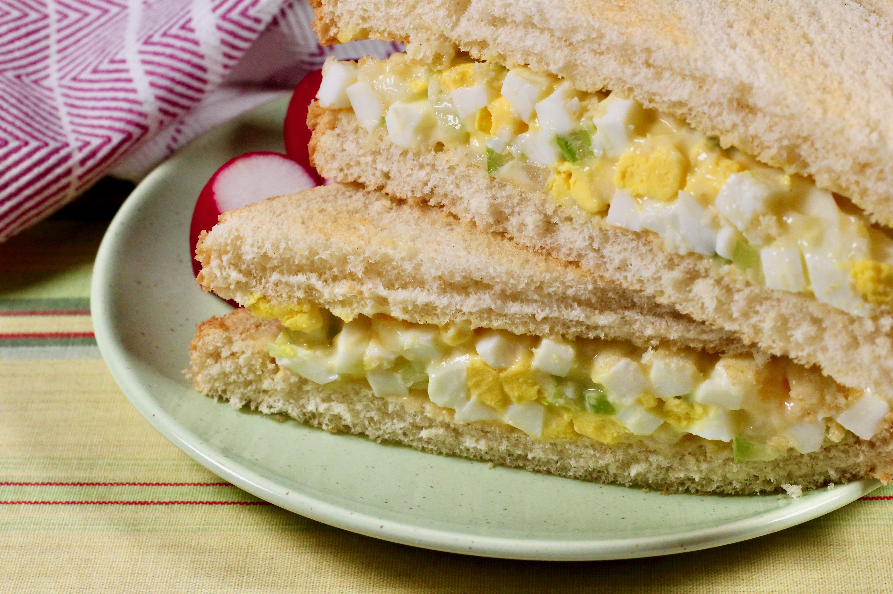

Egg Salad w/ Celery Recipes

Description
This information is an exerpt from: this website
This is a very simple egg salad with celery recipe, and some might find it a little bland for their tastes, but I love it just the way it is!
Ingredients
- 6 large eggs
- 2 stalks celery, finely chopped
- 1/2 cup mayonnaise (such as Hellman's)
- 1/4 cup finely chopped onion
- 1/4 teaspoon mustard powder
- 2 eggs, beaten
- 1/8 teaspoon salt
DIRECTIONS: Steps in making Banana Bread
-
Put eggs in a medium saucepan with cold water. Bring to boil; turn off heat and let sit for 10 minutes.
-
Peel eggs and chop both ways in an egg slicer into a bowl. Add celery, mayonnaise, onion, mustard powder, and salt and mix together. Serve.